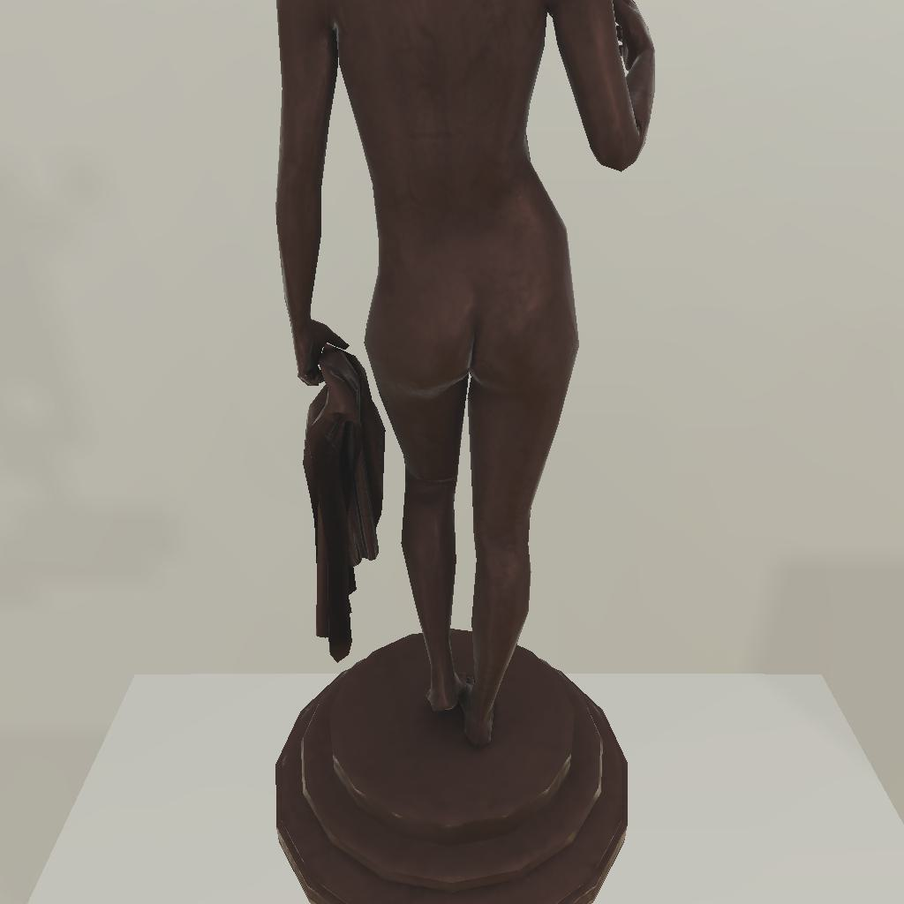

---------------------------------------------------------task: 4---------------------------------------------------------
--------------------------------------------------------------------------------------------------------------------------------------------------------------------
--------------------------------------------------------------------------------------------------------------------------------------------------------------------
Step:--------------------------------------------------------------------------17-------------------------------------------------------------------------------
----------------------------------------
VLM Prompt:
Image1:
**Instruction**
1. Analyze the provided image to identify all visible household objects, focusing on those relevant to the task description "examine the statue with the floorlamp."
2. Use the analysis of the image and the task hint "The agent must find an object of the desired type, locate and turn on a light source with the desired object in-hand." to answer the question: what is the most reasonable action in the choices for the task description "examine the statue with the floorlamp"?
4. Decide and write the answer using the template: The answer is: (i): , where i is the real number. If there is no desired object in the image, search every place based on **Initial Observation** to find the object. And if no one is exactly correct, choose a similar answer.
**Initial Observation**
You are in the middle of a room. Looking quickly around you, you can see armchair (1), coffeetable (1-2), sidetable (1), garbagecan (1), drawer (1), sofa (1), diningtable (1)
**Answer Choices**
(1): go to armchair 1
(2): go to garbagecan 1
(3): go to drawer 1
(4): go to sofa 1
(5): go to coffeetable 2
(6): go to diningtable 1
(7): put statue 1 in/on sidetable 1
(8): examine statue 1
(9): examine sidetable 1
**Answer**
Let's think step by step by following the instructions.
----------------------------------------
----------------------------------------
Original Response:
First, we analyze the image provided. The image shows a statue, which is the relevant object for the task "examine the statue with the floorlamp."
Next, we use the analysis of the image and the task hint to determine the most reasonable action. The hint suggests that the agent must find an object of the desired type (the statue) and locate and turn on a light source (the floorlamp) with the desired object in hand.
Based on the initial observation, there is no mention of a floorlamp in the room. Therefore, we can assume that the floorlamp is not visible in the image provided, and we must search the room to find it.
Since the task is to examine the statue with the floorlamp, and we have already identified the statue in the image, the most reasonable action would be to first find the floorlamp. None of the answer choices directly suggest finding or turning on a floorlamp. However, examining the statue (choice 8) might imply getting closer to it and possibly finding the floorlamp nearby.
The answer is: (8): examine statue 1.
----------------------------------------
----------------------------------------
>>> Refine Original VLM Response and Get Pure Action: examine statue 1
----------------------------------------
-----------------------------------------------------------------
Running time: 45.60473847389221 seconds
Total Money: 1.3112799999999998
-----------------------------------------------------------------
-----------------------------------------------------------------
Text Observation:This is a normal statue 1
-----------------------------------------------------------------
UNSUCCEED